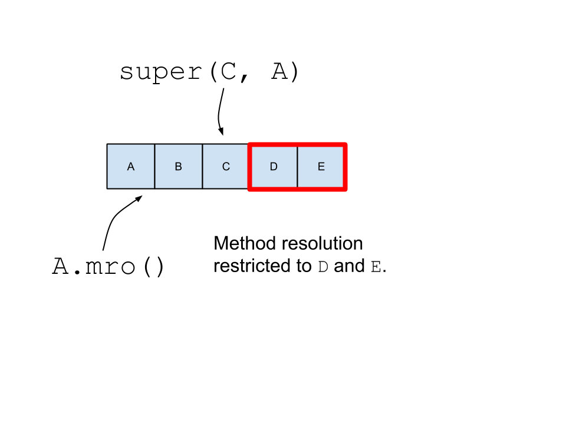

super()Austin Bingham
Sixty North AS
In [1]: class A: pass In [2]: class B(A): pass In [3]: class C(A): pass In [4]: class D(B, C): pass In [5]: D.mro() Out[5]: [__main__.D, __main__.B, __main__.C, __main__.A, object]
In [1]: class A: pass In [2]: class B(A): pass In [3]: class C(A): pass In [4]: class D(B, A, C): pass --------------------------------------------------------------------------- TypeError Traceback (most recent call last) <ipython-input-4-4bf732fadaa7> in <module>() ----> 1 class D(B, A, C): pass TypeError: Cannot create a consistent method resolution order (MRO) for bases A, C
Given a method resolution order and a class C in that MRO, super() gives you an object which resolves methods using only the part of the MRO which comes after C.
In [28]: s = super(B, D()) In [29]: type(s) Out[29]: super In [30]: s.__thisclass__ Out[30]: __main__.B